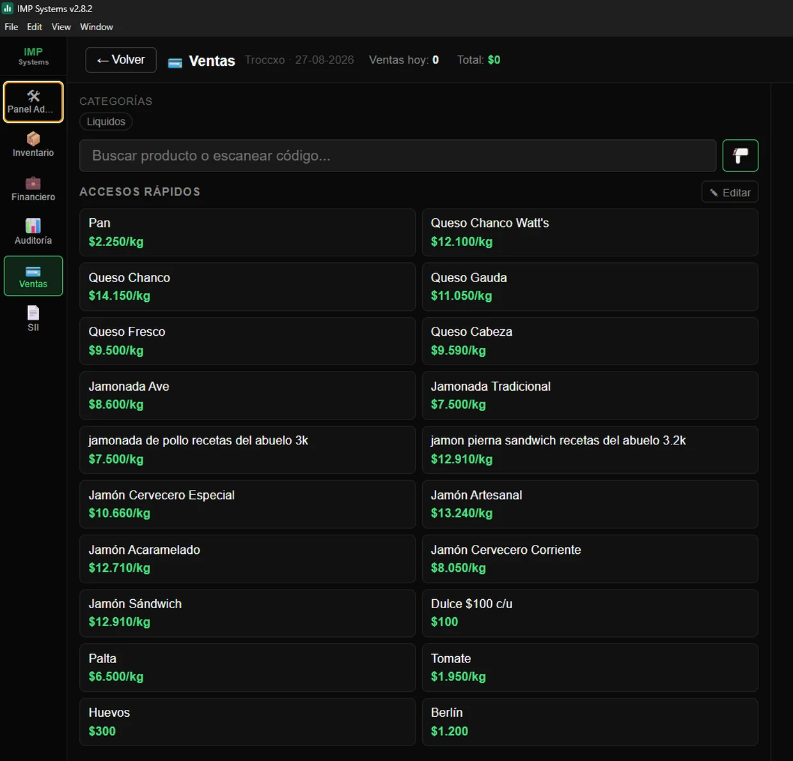
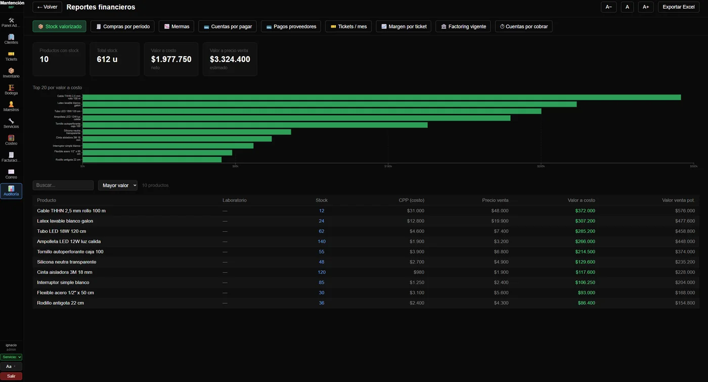
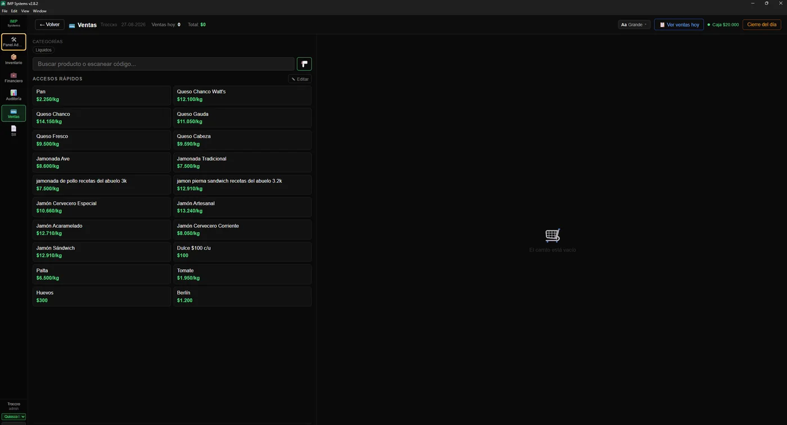
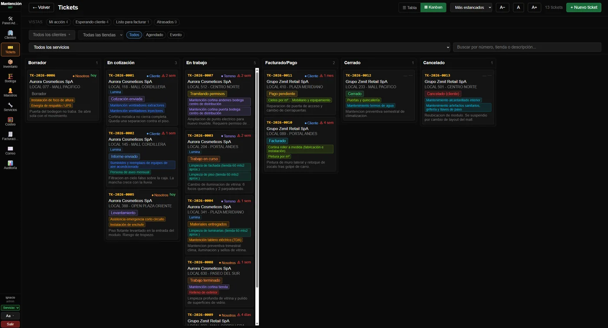
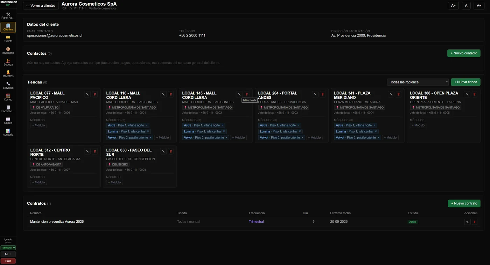
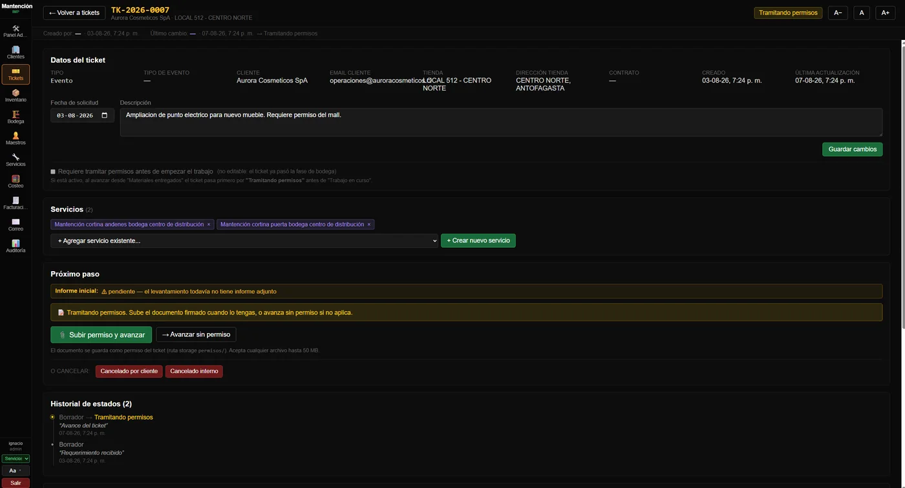
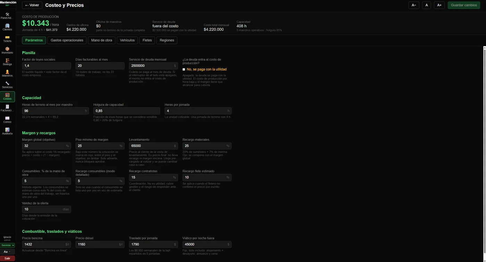
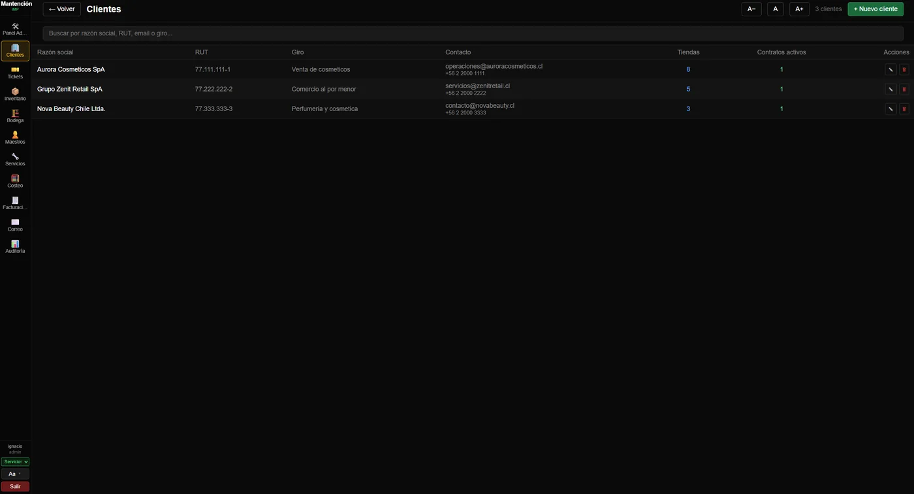

Almacenes, quioscos y minimarkets
Punto de venta rápido, caja diaria con arqueo y boleta electrónica que se emite sola.
IMP SystemsPunto de venta, inventario, caja diaria, boleta electrónica del SII y reportes en una sola aplicación, ajustada a cómo trabaja cada rubro. Hecho en Chile.

Un software de gestión chileno para pymes, negocios de barrio y farmacias. Se instala en computadores con Windows, guarda la información en la nube, se actualiza solo y tiene un valor referencial de aprox. 0,7 UF mensuales para quioscos y almacenes, y aprox. 1,22 UF para farmacias.

Ventas, stock, caja y boletas conectados entre sí: cada venta descuenta inventario, suma a la caja del día y queda en los reportes.
Pan, queso, fiambre o verduras: ingresas el peso y el precio sale solo. El stock se lleva en gramos.
Escaneas y el producto entra a la venta. Lo que más vendes queda a un toque.
Se emite sola al cerrar la venta, en el sistema gratuito del SII, afecta o exenta según el producto. Si se cae internet, queda pendiente y se emite después.
Apertura, cierre y arqueo. La diferencia la ve el dueño, no quien cierra.

Cuánto tienes y cuánto vale, a costo y a precio de venta, con los productos de mayor valor arriba.
Lo más vendido, lo que está por agotarse y lo que lleva tiempo sin moverse.
En Farma IMP, cada lote lleva su vencimiento y se vende primero el que vence antes.
Farma IMP lee el Excel de cada proveedor y te muestra quién tiene el mejor precio.
Cada requerimiento avanza por estados y el color dice de quién es la pelota: tuya, del cliente o de terreno.
Materiales, mano de obra y recargos, a partir del costo real de tu equipo.
Reservas y salidas de bodega por trabajo, facturación de venta, factoring y pagos.
Un portal web donde tus clientes siguen sus trabajos y cotizaciones (adicional).

Punto de venta rápido, caja diaria con arqueo y boleta electrónica que se emite sola.
IMP SystemsVenta por kilo con el precio calculado solo y stock en kilos.
Venta por pesoLotes con vencimiento, comparador de precios entre proveedores y control de mermas.
Farma IMPTickets por local, cotizaciones con costeo real, bodega y facturación.
Mantención IMPMBA Retail lleva con Mantención IMP la mantención de los locales de sus clientes: levantamiento, cotización, trabajo y facturación.
Ver Mantención IMPUn quiosco de Quilicura vende con IMP Systems todos los días. La boleta del SII se emite sola en cada venta.
Ver IMP Systems para quioscosCapturas de la aplicación, no maquetas. Los datos son de una empresa de demostración.




Pagas sólo los módulos que usas. El valor final se conversa según el tamaño de tu negocio.
Cuando escribes al WhatsApp, te contesta quien hace el sistema.
IMP Systems lo desarrolla Ignacio Morales Pérez, ingeniero en informática, en Santiago. Partió en una farmacia de barrio, junto a un químico farmacéutico, y de ahí pasó a la mantención de locales y a los quioscos.
Cada función se prueba primero con alguien que la usa de verdad. Tu información queda en la nube: si el computador se echa a perder, instalas la aplicación en otro y sigues donde quedaste.
IMP Systems es una empresa chilena de software de gestión para pymes, negocios de barrio y farmacias. Sobre un mismo motor tiene tres productos: IMP Systems para quioscos, almacenes, minimarkets y panaderías; Farma IMP para farmacias y droguerías independientes; y Mantención IMP para pymes de servicios en terreno.
Para pymes y negocios independientes que necesitan controlar ventas, inventario, caja y boletas sin el costo ni la complejidad de un sistema para grandes cadenas: almacenes, quioscos, minimarkets, panaderías, verdulerías que venden por kilo, farmacias y droguerías, y pymes de servicios en terreno. Si tu rubro todavía no está cubierto, escríbenos: adaptamos el sistema según la operación real que nos plantees.
Es una aplicación de escritorio para Windows que se instala en el computador del negocio y trabaja contra tu propia base de datos en la nube. Se actualiza sola: cuando publicamos una versión nueva, la app te avisa y la instala.
Sí. Los productos se venden por unidad o por peso: se ingresan los gramos o kilos y el precio se calcula solo. Sirve para pan, queso, fiambre, frutas y verduras, y el inventario lleva el stock en kilos.
IMP Systems para quioscos y almacenes parte en aprox. 0,7 UF mensuales y Farma IMP en aprox. 1,22 UF mensuales, como valor referencial que se ajusta al tamaño del negocio y a los módulos que uses. Mantención IMP se cotiza según el tamaño de la cartera de clientes, la cantidad de maestros y el volumen mensual de tickets.
Sí. En la versión para quioscos y almacenes, la boleta electrónica se emite sola al cerrar cada venta, en el sistema gratuito de boletas del SII y con la cuenta del propio negocio, afecta o exenta según el producto. Si el SII o internet fallan, la venta se hace igual y la boleta queda pendiente para emitirse después. Para farmacias, escríbenos y te contamos cómo queda tu caso.
Por WhatsApp o teléfono al +56 9 7877 2578, por correo a contacto@impsystems.cl, o completando el formulario de esta página. Respondemos en menos de 24 horas hábiles.
Te mostramos el sistema por videollamada o en tu negocio, sin compromiso. Respondemos en menos de 24 horas hábiles.